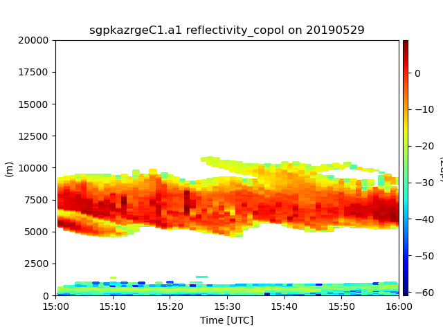

Note
Go to the end to download the full example code
Example on how to calculate and plot cloud masks
This example shows how to calculate a cloud mask and plot data
/home/runner/work/RadTraQ/RadTraQ/examples/plot_cloud_mask.py:18: DeprecationWarning: act.io.armfiles.read_netcdf will be replaced in version 2.0.0 by act.io.arm.read_arm_netcdf()
ds = act.io.armfiles.read_netcdf(filename)
import act
import matplotlib.pyplot as plt
from open_radar_data import DATASETS
import radtraq
# Read in sample data using ACT
filename = DATASETS.fetch('sgpkazrgeC1.a1.20190529.000002.cdf')
ds = act.io.armfiles.read_netcdf(filename)
# Resample data for ease of processing
ds = ds.resample(time='1min').nearest()
# Calculate and apply cloud mask
ds = radtraq.proc.cloud_mask.calc_cloud_mask(ds, 'reflectivity_copol')
ds = ds.where(ds['cloud_mask_2'] == 1)
# Plot data using ACT
display = act.plotting.TimeSeriesDisplay(ds)
display.plot('reflectivity_copol', cmap='jet')
display.axes[0].set_ylim([0, 20000])
plt.show()
ds.close()
Total running time of the script: (0 minutes 0.538 seconds)